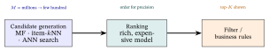

Traditional Recommender Systems
1. The problem and the user–item matrix
A recommender predicts which items a user will like. The data is the user–item matrix \(R\) (the interaction or rating matrix from the Linear-Algebra primer): rows = users, columns = items, entries = explicit ratings (a deliberately stated \(1\)–\(5\)) or implicit feedback (\(0/1\) inferred from behaviour — clicked / not).
| Titanic | Avatar | Matrix | |
|---|---|---|---|
| Ann | 5 | ? | 1 |
| Bob | 4 | 5 | ? |
| Cara | ? | 5 | 4 |
The defining feature: \(R\) is mostly unknown (?) — each user touches a tiny slice of the catalog. Recommendation = fill in the blanks (predict the ?s) and rank the top ones.
How empty is “mostly”? Even this \(3\times3\) toy is one-third blank. Real matrices are far emptier: MovieLens-20M has \(138{,}493\) users \(\times\;27{,}278\) movies \(=\) 3.8 billion cells but only 20 million ratings — 99.5% empty. This extreme sparsity is the central difficulty: you must predict an ocean of blanks from a few islands of data.

? = the unknowns to predict. One-third of this toy is blank; real matrices are \({\sim}99.5\%\) blank — that sparsity is why recommendation is hard.
Why “recommender system.” It recommends items. The two classical families answer the blanks differently: content-based (“more items like the ones you liked”) and collaborative (“items liked by people like you”). The names say exactly what each uses.
Explicit vs implicit feedback — and why the difference shapes everything. Write \(N\) for the number of users and \(M\) for the number of items (so \(R\) is \(N\times M\)). Each known entry is one of two kinds:
- Explicit: the user stated a score — a \(1\)–\(5\) rating, a thumbs up/down. You learn both what they like and what they dislike.
- Implicit: the score is inferred from behaviour — clicked / played / bought \(\to 1\), otherwise blank. This is far more common (every click is free; ratings are rare).
The catch that drives every modern loss: implicit feedback gives positives only. A movie a user didn’t click is not a confirmed dislike — it may simply be one they never saw. So implicit data has no true negatives; an unobserved cell is unknown, not zero. That single fact is why ranking losses like BPR (Losses & Regularizers §9) exist — instead of treating every blank as a \(0\) to fit, they only ask that an observed item rank above a randomly sampled unobserved one. Keep this split in mind: §2–§4 illustrate with explicit ratings (easier to read by hand), but the graph/LLM notes that follow are almost all implicit.
2. Content-based filtering
Content-based filtering uses item features (the “content”): genres, tags, the text of a description (as a TF-IDF vector — term-frequency × inverse-document-frequency, which up-weights words distinctive to an item and down-weights ubiquitous ones like “the”; Spärck Jones, 1972), etc. Represent each item as a feature vector, build a user profile by aggregating the features of items the user liked, and recommend items whose vector is most similar — by cosine similarity (Linear-Algebra primer).
Why “content-based.” It recommends from the content (attributes) of the items themselves, never needing anyone else’s behaviour.
A tiny TF-IDF (turning text into a feature vector). Treat three movie blurbs as our “documents.” The word alien appears in just \(1\) of the \(3\) (rare \(\to\) distinctive), romance in \(2\) of \(3\) (common). The inverse document frequency \(\operatorname{idf}=\log_{10}(N/\mathrm{df})\) — here in base \(10\) to keep the digits round; any fixed base works, since the ratio below is base-independent — then gives \(\operatorname{idf}(\textit{alien})=\log_{10}(3/1)=0.48\) versus \(\operatorname{idf}(\textit{romance})=\log_{10}(3/2)=0.18\) — so at equal raw counts alien carries \(\tfrac{0.48}{0.18}\approx2.7\times\) the weight. Multiplying each word’s count (term frequency) by its idf gives the item’s TF-IDF vector: distinctive words dominate, ubiquitous ones (“the”, “movie”) are crushed toward zero. The genre vectors just below are a hand-simplified stand-in for such a feature vector.
Worked example — on our three movies. Describe each by a genre vector over (action, sci-fi, romance):
\[ \text{Titanic}=[0,0,1],\qquad \text{Avatar}=[1,1,1],\qquad \text{Matrix}=[1,1,0]. \]
Ann loved Titanic (\(5\) in §1) — a romance. How well does each other movie match that taste?
\[ \cos(\text{Titanic},\text{Avatar})=\frac{(0)(1)+(0)(1)+(1)(1)}{\sqrt1\,\sqrt3}=\frac{1}{\sqrt3}\approx0.58, \qquad \cos(\text{Titanic},\text{Matrix})=\frac{0}{\sqrt1\,\sqrt2}=0. \]
Per component: the numerator is the dot product — it counts shared genres (Titanic and Avatar both carry romance \(\to 1\); Titanic and Matrix share none \(\to 0\)); the denominators \(\sqrt{\cdot}\) are the two vectors’ lengths, dividing out so only the angle (taste overlap), not how many genres a movie has, is measured. So a content recommender predicts Ann will like Avatar (it shares romance, \(0.58\)) but not Matrix (\(0\) — pure action/sci-fi) — which matches her actual low rating of Matrix (\(1\) in §1). It needed no other user, only the movies’ features.

Aggregating a user profile. A user who likes more than one movie gets a profile that is their average. Someone who loved Titanic \([0,0,1]\) and Avatar \([1,1,1]\) has profile \(\tfrac12([0,0,1]+[1,1,1])=[0.5,\,0.5,\,1]\) — still romance-heavy, but now open to action and sci-fi. The recommender then scores items against that blend: Matrix \([1,1,0]\) gets \(\cos=\frac{(0.5)(1)+(0.5)(1)+(1)(0)}{\sqrt{1.5}\,\sqrt2}=\frac{1}{\sqrt3}\approx0.58\). It is the profile, not any single movie, that a content recommender matches against — that aggregation is what makes “content-based” personal.
Strengths / weaknesses. No “other users” needed, so it handles a new item the moment it has features (no item cold-start, §7); but it tends to over-specialize (only ever recommends near-copies of what you already saw) and needs good features.
3. Collaborative filtering — the idea
Collaborative filtering (CF) ignores item content and uses only the interaction matrix \(R\) — the “wisdom of the crowd.” The premise (the same one From Graphs to LightGCN later mechanizes on a graph):
If Ann and Bob agreed on the movies they have both seen, then Ann will probably like the other movies Bob liked.
Why “collaborative.” Users implicitly collaborate — your ratings help recommend to others, theirs help recommend to you. (The term was coined at Xerox PARC’s Tapestry system in 1992, the first such filter, where users collaborated by annotating documents so the system could filter for one another.) Two flavours: memory-based (§4, compute on the raw matrix at query time) and model-based (§5, learn a compact model first).
4. Memory-based CF: user- and item-based \(k\)-NN
Memory-based CF predicts a missing rating from the most similar rows or columns of \(R\) — its nearest neighbours.
- User-based: to predict Ann’s rating of an item, find users most similar to Ann (by cosine / Pearson correlation of their shared ratings) and take a similarity-weighted average of their ratings of that item.
- Item-based: find items most similar to the target item (by their rating columns) and average the user’s ratings of those items. Item-based is usually steadier when items are fewer than users (each item column is then denser, so item–item similarities more stable) — Amazon’s case; it flips when items outnumber users (e.g. ML-20M’s 27k movies vs 138k users).
Why “memory-based,” “\(k\)-NN,” “neighbourhood.” It keeps the whole rating matrix in memory and compares at query time. \(k\)-NN = \(k\) nearest neighbours: use the \(k\) most-similar rows/columns — the item’s (or user’s) neighbourhood.
Let \(s_{ij}\in[-1,1]\) denote the similarity between items \(i\) and \(j\) (from one of the measures below, applied to their rating columns).
Worked example — item-based prediction by hand. Predict Ann’s Avatar (her blank ? from §1). Ann rated Titanic \(=5\) and Matrix \(=1\). Suppose the (rating-column) similarities of Avatar to those two are \(s_{\text{Av,Ti}}=0.9\) and \(s_{\text{Av,Ma}}=0.2\). The similarity-weighted average:
\[ \hat r_{\text{Ann,Avatar}}=\frac{s_{\text{Av,Ti}}\,r_{\text{Ann,Ti}}+s_{\text{Av,Ma}}\,r_{\text{Ann,Ma}}}{s_{\text{Av,Ti}}+s_{\text{Av,Ma}}} =\frac{0.9(5)+0.2(1)}{0.9+0.2}=\frac{4.5+0.2}{1.1}=\boxed{4.27}. \]
Per component: each rating Ann gave is weighted by how similar that item is to Avatar — so a close item (Titanic, \(0.9\)) votes far louder than a distant one (Matrix, \(0.2\)); dividing by the sum of the weights \(s_{\text{Av,Ti}}+s_{\text{Av,Ma}}\) renormalizes the votes to sum to \(1\), keeping \(\hat r\) on the \(1\)–\(5\) scale.
Avatar is much more like Titanic (\(0.9\), which Ann loved) than like Matrix (\(0.2\)), so the prediction lands high (\(4.27\)). Intuitive, no training — but it scales poorly (all-pairs similarity) and struggles when the matrix is very sparse.

Where do those similarities come from? From the same cosine as §2 — but applied to the items’ rating columns instead of their feature vectors. (That is the only difference between content and collaborative similarity: content compares features; collaborative compares who rated what.) Try it on our matrix: Avatar’s rated column is \((\text{Bob }5,\ \text{Cara }5)\) and Titanic’s is \((\text{Ann }5,\ \text{Bob }4)\) — the only user who rated both is Bob, so the cosine sees a single shared dimension and collapses to a degenerate \(\frac{5\times4}{\sqrt{5^2}\,\sqrt{4^2}}=1\). Every pair in this 3-user toy co-rates exactly one user — too thin for an honest similarity, which is why we used realistic stand-ins (\(0.9,\,0.2\)) above. On a real, denser matrix the same column-cosine yields meaningful values; practitioners further apply shrinkage (down-weighting similarities backed by few co-ratings) to tame exactly this small-overlap problem. Three measures are standard:
| Measure | Formula | Best for |
|---|---|---|
| Cosine | \(\dfrac{\mathbf{u}\cdot\mathbf{v}}{\lVert\mathbf{u}\rVert\,\lVert\mathbf{v}\rVert}\) | direction of two vectors; implicit/binary data or features |
| Pearson | cosine of the mean-centred vectors (sums run over the items rated by both users — the co-rated set) | explicit ratings, where users differ in generosity |
| Jaccard | \(\dfrac{\lvert A\cap B\rvert}{\lvert A\cup B\rvert}\) | binary liked-sets (ignores rating values) |
Reading the three by their parts: cosine divides the dot product \(\mathbf u\cdot\mathbf v\) (which fires only where both vectors are nonzero — shared ratings) by the two lengths \(\lVert\mathbf u\rVert\lVert\mathbf v\rVert\), cancelling magnitude so only direction survives. Pearson is that same cosine on mean-centred vectors — \(\dfrac{\sum_i(u_i-\bar u)(v_i-\bar v)}{\sqrt{\sum_i(u_i-\bar u)^2}\,\sqrt{\sum_i(v_i-\bar v)^2}}\) — so it compares deviations from each user’s own baseline \(\bar u\), not raw scores. Jaccard divides \(\lvert A\cap B\rvert\) (items both liked) by \(\lvert A\cup B\rvert\) (items either liked) — the fraction of the combined like-set that overlaps. Why the names: cosine because the normalized dot product literally equals \(\cos\theta\), the angle’s cosine; Pearson after Karl Pearson (1890s), who formalized the correlation coefficient \(r\); Jaccard after the botanist Paul Jaccard (1901), who measured this set ratio as the species overlap between alpine meadows.
Why Pearson centres. Users rate on different scales — a harsh critic’s \(3\) can mean what a generous one’s \(5\) does. Subtract each user’s mean first. Take ratings \(A=[5,4,3]\) and \(B=[1,2,3]\): raw cosine is \(0.83\) (they look aligned — both positive), but centring gives \(A'=[1,0,-1]\), \(B'=[-1,0,1]\) and Pearson \(=-1\): their tastes are actually opposite. Cosine was fooled by shared positivity; Pearson, by removing each user’s baseline, is not — which is why the user-based predictor centres ratings before averaging. Jaccard instead forgets the numbers entirely: for liked-sets \(\{1,2,3\}\) and \(\{2,3,4\}\) it is \(\tfrac{|\{2,3\}|}{|\{1,2,3,4\}|}=\tfrac24=0.5\) — handy for pure click/like data.
Worked example — user-based prediction by hand (with mean-centring). Now predict Bob’s Matrix (his blank from §1) from the users who rated Matrix: Ann (Matrix \(=1\)) and Cara (Matrix \(=4\)). First each user’s own mean (over what they rated): \(\bar r_{\text{Bob}}=\tfrac{4+5}{2}=4.5\), \(\bar r_{\text{Ann}}=\tfrac{5+1}{2}=3\), \(\bar r_{\text{Cara}}=\tfrac{5+4}{2}=4.5\). Suppose Bob is quite like Cara (\(s_{\text{Bob,Cara}}=0.8\) — both adore Avatar) and mildly like Ann (\(s_{\text{Bob,Ann}}=0.2\)). The mean-centred neighbour formula adds Bob’s own baseline to a similarity-weighted average of deviations:
\[ \hat r_{\text{Bob,Ma}}=\bar r_{\text{Bob}}+\frac{\sum_v s_{\text{Bob},v}\,(r_{v,\text{Ma}}-\bar r_v)}{\sum_v s_{\text{Bob},v}} =4.5+\frac{0.2\,(1-3)+0.8\,(4-4.5)}{0.2+0.8}=4.5+\frac{-0.8}{1}=\boxed{3.70}. \]
Per component: each neighbour contributes how far they sat above or below their own average (\(r_{v,\text{Ma}}-\bar r_v\)) — Ann rated Matrix \(2\) below her mean, Cara \(0.5\) below hers, so both say “below average for me.” Weighting those deviations (\(0.2,0.8\)), renormalizing, and adding back Bob’s baseline \(4.5\) predicts he too rates Matrix a bit below his average: \(3.70\). Why centre? Without it, Cara’s generous \(4\) and Ann’s stingy \(1\) aren’t comparable; centring puts every user on a common “relative to my own taste” scale (exactly the Pearson move above) — the one trick that makes user-based CF trustworthy across users who rate on different scales.
Shrinkage — down-weighting similarities backed by few co-ratings. A similarity computed from many shared ratings is reliable; one computed from only one or two co-ratings is not — the formula may return \(0.9\) on sheer chance. Practitioners apply shrinkage to pull such noisy estimates toward \(0\):
\[ s_{\text{shrunk}} = s \cdot \frac{n}{n + \kappa}, \]
where \(n\) is the number of co-ratings supporting the similarity (the users who rated both items in item-based CF, or the items rated by both users in user-based CF) and \(\kappa\) is a tunable shrinkage constant (typically 25–100). When \(n \gg \kappa\) the factor \(n/(n+\kappa)\to 1\) and the similarity is used as-is; when \(n\) is small the factor is much less than \(1\) and the similarity is pulled toward \(0\) — exactly our toy example, where every pair shares just one co-rating (\(n=1\)) and would be sharply shrunk.

5. Model-based CF: matrix factorization (→ embeddings)
Instead of comparing rows at query time, learn a compact model. Matrix factorization (MF) assumes each user and each item has a short latent-factor vector (\(d\) numbers), and a rating is their dot product:
\[ \hat r_{ui} = \mathbf{p}_u \cdot \mathbf{q}_i, \qquad R \approx P\,Q^\top. \]
- \(\mathbf{p}_u\) — user \(u\)’s latent factors (taste in \(d\) hidden dimensions).
- \(\mathbf{q}_i\) — item \(i\)’s latent factors (how much it expresses each dimension).
- \(P,Q\) — the user and item factor matrices; \(R\approx PQ^\top\) factorizes the matrix.
The dot product spelled out: \(\mathbf p_u\cdot\mathbf q_i=\sum_{f=1}^d p_{uf}q_{if}\) sums, over the \(d\) hidden factors, (how much user \(u\) wants factor \(f\)) \(\times\) (how much item \(i\) has it) — large when tastes meet traits.
Biases — the offsets real MF never omits. Before the dot product, add three baselines: a global mean \(\mu\), a user bias \(b_u\), and an item bias \(b_i\), \[\hat r_{ui}=\mu+b_u+b_i+\mathbf p_u\cdot\mathbf q_i.\] Decoded: \(\mu\) is the average rating over all data; \(b_u\) captures users who rate generously or harshly overall (the very baseline Pearson centred out in §4); \(b_i\) captures items that are broadly loved or panned regardless of personal taste. The dot product is then freed to explain only the interaction — the part of a rating that genuinely depends on who watches what. The biases are learned jointly with \(P,Q\) (each takes the same gradient step, with its own small L2 term), and on the Netflix Prize these simple offsets alone closed a surprising share of the gap — which is why the famous MF (Koren et al.) is this biased form, not the bare dot product.
Choosing \(d\) — the dial between memorizing and generalizing. The width \(d\) (the rank, the number of latent factors) is a deliberate choice, and it trades off the same way the model capacity did in the Neural-Networks note: small \(d\) (say \(2\)) forces a coarse, heavily shared description — too small and it underfits (cannot tell enough tastes apart); large \(d\) (say \(1000\)) lets each user/item be described in fine detail — too large and it overfits, drifting back toward memorizing the sparse observed ratings. Production systems land in the middle (often \(d\approx 32\)–\(256\)); our figure uses \(d=64\).
And here is why a deliberately narrow \(d\) makes MF generalize, not just compress. The \(\approx\) in \(R\approx PQ^\top\) (not \(=\)) is the whole point: a width-\(d\) product is a low-rank guess that cannot reproduce every entry independently. With only \(d\) numbers per user, two users whose observed ratings overlap are forced to land on nearby factor vectors \(\mathbf p_u\) — there isn’t enough room to describe them separately. So once Ann and Bob look alike on the movies they both rated, the model must give them similar factors, and a film Bob rated but Ann hasn’t gets a prediction for Ann borrowed from Bob’s vector — the blank is filled by the structure shared across latent-similar users and items. That forced sharing is the generalization; memorizing every cell would need full rank (\(d=\min(N,M)\)), which the data is far too sparse to support.
The factors are learned by minimizing a loss over observed ratings — squared error for explicit ratings, or BPR for implicit ranking (Losses & Regularizers §8–§9), with L2 regularization (Losses & Regularizers §5). Concretely, \(P,Q\) minimize
\[ \min_{P,Q}\ \sum_{(u,i)\in\mathcal O}\big(r_{ui}-\mathbf p_u\cdot\mathbf q_i\big)^2 \;+\; \lambda\big(\lVert\mathbf p_u\rVert^2+\lVert\mathbf q_i\rVert^2\big), \]
decoded piece by piece: the sum runs over only the observed cells \(\mathcal O\) (you cannot fit blanks); \((r_{ui}-\mathbf p_u\cdot\mathbf q_i)^2\) is the squared error on each known rating; and \(\lambda(\lVert\mathbf p_u\rVert^2+\lVert\mathbf q_i\rVert^2)\) is the L2 regularizer (Losses & Regularizers §5) pulling factors toward \(0\) so they don’t overfit the sparse data. The loss and update below are for the bare dot-product model; for biased MF, replace \(e_{ui}\) with \(r_{ui}-(\mu+b_u+b_i+\mathbf p_u\cdot\mathbf q_i)\) and add symmetric gradient steps for \(b_u\) and \(b_i\) (each nudged by the same error). One SGD step on a single error \(e_{ui}=r_{ui}-\mathbf p_u\cdot\mathbf q_i\) is
\[ \mathbf p_u \leftarrow \mathbf p_u + \eta\,(e_{ui}\,\mathbf q_i - \lambda\,\mathbf p_u), \]
read symbol by symbol: \(e_{ui}\) is the signed error (truth minus guess); \(\eta\) (eta) is the learning rate — the step size from the Calculus primer, how far to move per update; and \(e_{ui}\,\mathbf q_i\) is the direction. The sign does the teaching: if we under-predicted (\(e_{ui}>0\), the true rating was higher than \(\mathbf p_u\cdot\mathbf q_i\)) the update adds a multiple of \(\mathbf q_i\), pushing \(\mathbf p_u\) toward the item’s vector so next time their dot product is larger; if we over-predicted (\(e_{ui}<0\)) it subtracts, pulling \(\mathbf p_u\) away. The \(-\lambda\mathbf p_u\) term shrinks \(\mathbf p_u\) a touch every step (the regularizer’s pull toward \(0\)). The item factors \(\mathbf q_i\) update by the symmetric rule. This is exactly the Calculus-primer gradient step, now walking two embeddings toward each other until their dot product matches the data.
The implicit-feedback objective (when there are no ratings, only clicks). The sum above runs over observed cells only — fine for explicit ratings, but recall from §1 that implicit feedback is positives-only: a blank is unknown, not a confirmed \(0\). The standard fix (Hu, Koren & Volinsky, 2008) keeps the squared-error shape but sums over every cell, splitting each into a binary preference \(p_{ui}\in\{0,1\}\) (\(1\) if the user touched item \(i\), else \(0\)) and a confidence \(c_{ui}=1+\alpha r_{ui}\) that grows with how often they did (\(r_{ui}\) = play count):
\[ \min_{P,Q}\ \sum_{u,i}\ c_{ui}\,\big(p_{ui}-\mathbf p_u\cdot\mathbf q_i\big)^2\;+\;\lambda(\dots). \]
Decoded: every blank still enters the sum as a \(p_{ui}=0\) target — but at the floor confidence \(c_{ui}=1\) (a soft “probably not,” not a hard zero), while a much-played item enters at high confidence (e.g. \(c=41\) for one play at the usual \(\alpha=40\)), so the fit is pulled hard toward the positives and only gently toward the blanks. Because the loss is quadratic in \(P\) (with \(Q\) fixed, each user vector \(\mathbf p_u\) sits only inside squared terms, so setting its gradient to zero is a single linear system — one matrix solve per user) and vice-versa, each side has a closed-form least-squares solution — so this is solved by alternating least squares (ALS / iALS), not SGD (the “In practice” box).
One iALS solve, by hand. “Alternating” means: hold the item factors \(Q\) fixed and solve every user vector in closed form, then hold \(P\) fixed and solve every item vector, and repeat. Each user solve is the regularized weighted least-squares normal equation \[\mathbf p_u=\big(Q^{\top}C^{u}Q+\lambda I\big)^{-1}Q^{\top}C^{u}\,\mathbf p^{u},\] where \(C^{u}=\operatorname{diag}(c_{u1},c_{u2},\dots)\) holds the confidences and \(\mathbf p^{u}\) the \(\{0,1\}\) preferences. A tiny case: \(d=2\), two items with (orthonormal) factors \(\mathbf q_1=[1,0],\ \mathbf q_2=[0,1]\); user \(u\) played item 1 once (preference \(1\), confidence \(c_1=1+\alpha\cdot1=41\) at \(\alpha=40\)) and never touched item 2 (preference \(0\), floor confidence \(c_2=1\)); \(\lambda=10\). Then \(Q^{\top}C^{u}Q=\operatorname{diag}(41,1)\), so \(Q^{\top}C^{u}Q+\lambda I=\operatorname{diag}(51,11)\) and \(Q^{\top}C^{u}\mathbf p^{u}=[41,0]\). Inverting the diagonal: \[\mathbf p_u=\Big[\tfrac{41}{51},\ \tfrac{0}{11}\Big]=[\,0.804,\ 0\,].\] Read it: the high confidence on item 1 (\(c_1=41\)) pulls that factor strongly toward \(1\), while the regularizer holds it back to \(0.804\) — exactly the ratio \(c/(c+\lambda)=41/51\); the untouched item 2 contributes nothing, so its factor stays \(0\). That is one user’s half-step; the next half-step fixes \(P\) and solves each item the same way — alternating until the factors settle. (We took \(Q\) orthonormal so the \(2\times2\) inverse is trivial by hand; a general \(Q\) uses the same normal equation, just a non-diagonal solve.)
The competing recipe keeps the positives-only spirit instead and ranks an observed item above a sampled blank — that is BPR (Losses & Regularizers §9). Both descend from this one fact: implicit data has no true negatives.
Why “latent factor” and “matrix factorization.” Latent = hidden / not directly observed — the dimensions (maybe “amount of romance,” “amount of action”) are discovered, not labelled. Factorization = writing the big matrix \(R\) as a product of two thin ones \(P,Q^\top\) — the same idea as the SVD (Singular Value Decomposition, \(R=U\Sigma V^\top\), Linear-Algebra primer §6); early MF was inspired by the SVD, but because \(R\) has missing entries — an exact SVD needs a complete matrix — it instead learns \(P,Q\) by gradient descent over the observed ratings only (Funk, 2006). It became the workhorse of the $1M Netflix Prize (2006–09, which paid out for a 10% cut in RMSE over Netflix’s Cinematch baseline) and made matrix factorization famous (Koren et al.).

Worked example. Name the \(d=2\) factors romance and action. Ann loves romance, not action, so \(\mathbf{p}_{\text{Ann}}=[\,2,\,0.5\,]\); Avatar has both, \(\mathbf{q}_{\text{Avatar}}=[\,1,\,1\,]\):
\[ \hat r_{\text{Ann,Avatar}} = \mathbf{p}_{\text{Ann}}\cdot\mathbf{q}_{\text{Avatar}} = \underbrace{(2)(1)}_{\text{romance}}+\underbrace{(0.5)(1)}_{\text{action}}=2+0.5=\boxed{2.5}. \]
Ann’s strong romance taste (\(2\)) meeting Avatar’s romance carries the score; her mild action taste (\(0.5\)) adds little — a middling \(2.5\), fitting a film that is part romance (which she’d enjoy) and part action (which she wouldn’t).

The score is one number, but the factors are a place: each user and item is a point in the \(d\)-dimensional latent space, and that geometry is the whole intuition behind “similar tastes get similar recommendations.”

Why this differs from §4’s \(4.27\) (and §2’s verdict). These factor values are illustrative — chosen to show the mechanics, not fit to §4’s similarities or §2’s features — so the three methods need not agree on a single number for Ann–Avatar. What is invariant across content-based (§2), kNN (§4), and MF (here) is the dot-product form of the score; the exact value each toy produces is not. A trained MF model fits its factors to the observed ratings, so its numbers would then track the data.
The bridge to the rest of the book. Those latent vectors \(\mathbf{p}_u,\mathbf{q}_i\) are exactly the embeddings of From Graphs to LightGCN (Linear-Algebra primer §1 & §4; From Graphs to LightGCN §6) — and the score is the same dot product. LightGCN’s one addition is to refine these embeddings by propagating them over the user–item graph before taking the dot product. So MF is “graph recsys with zero propagation layers”; everything in Tier 3 grows from this section.
In practice. For explicit ratings, MF is almost always trained with ALS (alternating least squares — fix \(Q\), solve for \(P\) analytically, then swap), not SGD. For clicks and other implicit feedback, use iALS, which weights each observation by a confidence score before solving. Deep variants (NeuMF, two-tower networks) swap the dot product for an MLP and train with SGD/Adam. Don’t hand-roll any of these:
implicit(iALS, BPR), LightFM (hybrid MF), and RecBole (25+ models, unified pipeline) all provide tuned, tested implementations. Two failure modes beyond cold-start (§7): popularity bias — factors absorb the blockbuster signal and keep recommending the same head items (§6’s long-tail caveat applies at training time too) — and instability for sparse users/items — a user with two ratings gets poorly anchored factors that shift wildly with each new interaction.
6. Evaluation (and the popularity caveat)
Full treatment in the Evaluation Metrics note — every metric below (and MRR, MAP, F1, Hit Rate, AUC, and the beyond-accuracy family) is defined there with a toy example. Here is the one-paragraph version.
Two regimes, two metric families:
- Rating prediction (fill in the number): RMSE / MAE — average error of predicted vs. true ratings. The Netflix-Prize metric.
- Top-\(K\) ranking (recommend a short list): Recall@\(K\), Precision@\(K\), NDCG@\(K\) — did the items the user actually liked appear near the top? This is what modern recsys (and the graph notes) report.
Why these names. RMSE = Root-Mean-Square Error. Recall@K = fraction of the user’s relevant items recalled within the top \(K\). NDCG = Normalized Discounted Cumulative Gain — rewards putting relevant items high (gains are discounted by rank).
The popularity trap (the long tail). Interactions are wildly uneven: a few blockbusters collect most of the ratings, while the vast majority of items — the long tail (a term Chris Anderson popularized in Wired, 2004, for the long, thin right side of a popularity curve) — each get very few. A recommender can look accurate by simply pushing blockbusters at everyone, yet never surface the niche items a user would actually find delightful.

Popularity caveat (numbers in From Graphs to LightGCN §13). Because accuracy metrics can be gamed by recommending popular items, a trustworthy evaluation also reports coverage / long-tail metrics. This popularity/long-tail effect is worked out numerically in From Graphs to LightGCN §13.
7. The cold-start problem and hybrid methods
Cold start: CF needs interaction history, so it is stuck on a brand-new user or item that has none. Why “cold start”: the system must start “cold,” with no behavioural data.
- New item: content-based (§2) can recommend it from its features immediately.
- New user: ask a few preferences, or fall back to popularity.
Hybrid recommenders combine content + CF to cover each other’s weaknesses. The modern view of SSL & Contrastive Learning is a hybrid: a collaborative backbone (MF/LightGCN) plus rich content features that an LLM generates from item/user text — content-based and collaborative, fused.
Where these algorithms actually sit — the retrieval → ranking funnel. A real system never scores all \(M\) items with its best model for every request — at \(M\approx\) millions that is far too slow. Instead recommendation is a funnel of two stages with opposite priorities:

So the dot-product score you just learned is not the whole system — it is the fast first filter that makes the expensive second stage affordable. (The graph and LLM notes mostly improve the embeddings this funnel retrieves with.) Both stages — and the training loop that produces the embeddings they rank — are built in full in Training and Serving a Recommender.
→ Which tools, in practice? For which vector-search library or database to serve this retrieval stage (FAISS, hnswlib, Qdrant, Milvus, pgvector — and which ANN index by scale), and which RecSys framework to build/benchmark with (RecBole, Cornac, implicit), see the Implementation Choices appendix §3 and §5.
8. Factorization machines — putting the features back in
Matrix factorization (§5) knows only who and what — a user id and an item id. But real interaction data carries features too: the user’s age or country, the item’s genre, the context (time of day, the device, the day of week). Feature here just means any extra attribute attached to the event, beyond the bare user/item identities. Factorization machines (FMs) are the smallest model that uses all of them — and they are the missing rung between §5’s MF and the modern feature-rich click-through-rate (CTR) models.
Why we can’t just bolt features onto a linear model. A plain linear model scores \(w_0+\sum_i w_i x_i\) — one weight \(w_i\) per feature, added up. It can read features, but it treats each in isolation: it never learns that action films land differently for Ann than for everyone on average. That signal lives in feature interactions — pairs of features whose combination matters (user \(\times\) genre, item \(\times\) time-of-day). The textbook fix is one free weight \(w_{ij}\) per pair of features, but that is unlearnable on sparse data: most feature pairs (this user, that rare genre) never co-occur in the training set, so their \(w_{ij}\) sees zero examples and stays at its initial value. With millions of features, you cannot learn a table of all their pairwise weights.
The FM idea. Don’t store a free number for each pair. Instead give every feature its own short vector \(\mathbf v_i\) (just like §5 gives every user and item a latent vector), and define the interaction strength of features \(i\) and \(j\) as the dot product \(\langle\mathbf v_i,\mathbf v_j\rangle\). Now an unseen pair is no problem: once the model has learned \(\mathbf v_i\) from any pair \(i\) appeared in, and \(\mathbf v_j\) from any pair \(j\) appeared in, their dot product gives a sensible interaction even if \(i\) and \(j\) were never seen together — exactly the generalization- by-forced-sharing argument of §5, now applied to every feature pair.
Why “factorization machine.” It factorizes the (otherwise free) matrix of pairwise interaction weights into per-feature vectors — replacing one number per pair \(w_{ij}\) with a product \(\langle\mathbf v_i,\mathbf v_j\rangle\) of learned factors, the same “write a big table as a product of thin ones” move as MF. Introduced by Rendle (2010).
The model, symbol by symbol. For a feature vector \(\mathbf x=(x_1,\dots,x_n)\):
\[ \hat y(\mathbf{x}) = w_0 + \sum_{i=1}^{n} w_i x_i + \sum_{i=1}^{n}\sum_{j=i+1}^{n} \langle \mathbf{v}_i, \mathbf{v}_j\rangle\, x_i x_j. \]
Decoded piece by piece:
- \(x_i\) — the value of feature \(i\). For categorical features (user id, genre) the vector is one-hot: \(x_i=1\) for the one active category, \(0\) everywhere else.
- \(w_0\) — the global bias: the average score before any feature speaks (the \(\mu\) of §5).
- \(w_i\) — the per-feature weight: how much feature \(i\) pushes the score on its own (the linear part — this is the plain linear model).
- \(\mathbf v_i\in\mathbb R^k\) — feature \(i\)’s factor vector, \(k\) learned numbers (\(k\) is the FM’s rank, the analogue of §5’s \(d\)).
- \(\langle\mathbf v_i,\mathbf v_j\rangle=\sum_{f=1}^k v_{if}v_{jf}\) — the learned, factorized strength of the interaction between features \(i\) and \(j\) (large when their factor vectors point the same way).
- the double sum \(\sum_i\sum_{j=i+1}\) runs over every unordered pair of features (\(j\) starts at \(i+1\) so each pair is counted once, no self-pairs); \(x_ix_j\) gates it — the interaction only fires when both features are present (both \(x=1\)), which for one-hot features means “this user and this genre are both active.”
So an FM is linear part + factorized pairwise part: each feature gets a solo weight and a vector that lets it interact with every other feature through a dot product.
MF is a special case of FM. Take the feature vector to be just a one-hot user concatenated with a one-hot item — nothing else. Then exactly one feature pair is active: the user feature and the item feature. The whole interaction sum collapses to the single term \(\langle\mathbf v_{\text{user}},\mathbf v_{\text{item}}\rangle\) — which is precisely §5’s MF dot product \(\mathbf p_u\cdot\mathbf q_i\), with \(\mathbf v_{\text{user}}\) playing \(\mathbf p_u\) and \(\mathbf v_{\text{item}}\) playing \(\mathbf q_i\) (and the \(w_i\) terms supplying §5’s user/item biases). In one line: FM = “MF that also accepts side features.” When the only features are the ids, you get MF back; add a genre or a timestamp and the same machinery uses it.
Worked example — the §5 movie, now with a genre feature. Three features are active (each \(x=1\)): user = Ann, item = Avatar, genre = action. Reuse §5’s vectors for the first two — \(\mathbf v_{\text{Ann}}=\mathbf p_{\text{Ann}}=[\,2,\,0.5\,]\) and \(\mathbf v_{\text{Avatar}}=\mathbf q_{\text{Avatar}}=[\,1,\,1\,]\) (so \(k=2\), the romance/action factors of §5) — and add a factor vector for the new genre feature, \(\mathbf v_{\text{action}}=[\,0.5,\,-1\,]\). The biases: \(w_0=3.0\) (global mean), \(w_{\text{Ann}}=0.2\), \(w_{\text{Avatar}}=0.3\), \(w_{\text{action}}=-0.1\).
The three pairwise interactions (every dot product is checkable by hand):
\[ \langle\text{Ann},\text{Avatar}\rangle=\underbrace{(2)(1)}_{\text{romance}}+\underbrace{(0.5)(1)}_{\text{action}}=\boxed{2.5},\quad \langle\text{Ann},\text{action}\rangle=(2)(0.5)+(0.5)(-1)=\boxed{0.5},\quad \langle\text{Avatar},\text{action}\rangle=(1)(0.5)+(1)(-1)=\boxed{-0.5}. \]
The first one, \(\langle\text{Ann},\text{Avatar}\rangle=2.5\), is exactly the §5 MF score — the user\(\times\)item interaction is unchanged; the FM has simply added two more. Assemble the whole score: global bias, then the linear (solo) weights, then the interactions:
\[ \hat y = \underbrace{3.0}_{w_0} \;+\; \underbrace{(0.2+0.3-0.1)}_{\text{linear} \,=\, 0.4} \;+\; \underbrace{(2.5+0.5-0.5)}_{\text{interactions} \,=\, 2.5} \;=\; 3.0+0.4+2.5 = \boxed{5.9}. \]
Reading it: the genre feature contributed both a small solo penalty (\(w_{\text{action}}=-0.1\), “action films score slightly lower on average”) and two interactions — a positive Ann\(\times\)action (\(0.5\): her mild taste for action, factor \(2\) of \(\mathbf v_{\text{Ann}}\)) and a negative Avatar\(\times\)action (\(-0.5\)). The MF-only score for Ann–Avatar was the bare interaction \(2.5\) of §5; the FM wraps it in the global mean, the solo weights, and the extra feature interactions to reach \(\hat y=5.9\). Add a genre, and the model uses it — without ever needing to have seen “Ann + action” as a free pairwise weight.
| Matrix factorization (§5) | Factorization machine (§8) | |
|---|---|---|
| Inputs | user id, item id only | any features: ids + age, genre, time, … |
| Score | \(\mu+b_u+b_i+\mathbf p_u\cdot\mathbf q_i\) | \(w_0+\sum_i w_i x_i+\sum_{i<j}\langle\mathbf v_i,\mathbf v_j\rangle x_ix_j\) |
| Interactions | one: user \(\times\) item | all feature pairs, each \(\langle\mathbf v_i,\mathbf v_j\rangle\) |
| Cold start | stuck on a new user/item (§7) | side features still carry signal (§7) |
Training the FM. The FM is trained with the same regularized squared-error objective as MF (§5): \(L=\sum_{(u,i)\in\mathcal O}(r_{ui}-\hat y(\mathbf x))^2 + \lambda\sum_i\lVert\mathbf v_i\rVert^2\), where the sum again runs over observed interactions only. The gradient with respect to each feature factor vector \(\mathbf v_i\) is \(\partial L/\partial\mathbf v_i = -2\,(r-\hat y)\,\bigl(\sum_j \mathbf v_j x_j - \mathbf v_i x_i\bigr)\,x_i + 2\lambda\,\mathbf v_i\), where the inner sum \(\sum_j \mathbf v_j x_j\) collapses to a running sum already available from the \(O(kn)\) forward pass, so each factor-gradient costs no extra enumeration of pairs. SGD then alternates over features exactly as §5’s SGD alternates over users and items: draw an observed event, compute the error \(r-\hat y\), update every active feature’s \(\mathbf v_i\) and \(w_i\) by one step, and repeat.
Three things worth knowing in one line each.
- It runs in linear time. The double sum looks like \(O(kn^2)\) (every pair of \(n\) features), but a standard algebraic rewrite collapses it to \(O(kn)\) — linear in the number of features — so FMs scale to millions of (mostly-zero, one-hot) features. The rewrite is short — it is in the box below (Rendle, 2010).
- It softens cold start (tie-back to §7). A brand-new user or item has no learned id interaction worth trusting — but its side features (the user’s country, the item’s genre) already have well-trained factor vectors from every other event they appeared in, so the FM can still score it sensibly. Features carry signal where ids have none — the §7 cold-start cure, built into the model.
- It is the root of the modern CTR lineage. Stack a neural network on top of the FM/cross structure and you get the deep CTR models that run industrial ad and feed ranking: Wide & Deep (a wide linear/cross part plus a deep MLP, jointly trained), DeepFM (an FM and a deep MLP sharing the same feature embeddings), and DCN / Deep & Cross (an explicit cross network that builds higher-order feature interactions, beside a deep part). All three keep FM’s “every feature is a vector, interactions are dot products” core and add depth on top — pointers, not detours.
The linear-time rewrite (optional, but it is just three lines). The pairwise sum is computed without ever enumerating pairs. For each factor dimension \(f\), take the full square and subtract the diagonal, then halve: \[\sum_{i<j}\langle\mathbf v_i,\mathbf v_j\rangle x_ix_j=\tfrac12\sum_{f=1}^{k}\Big[\big(\textstyle\sum_{i=1}^{n} v_{if}x_i\big)^2-\sum_{i=1}^{n} v_{if}^2x_i^2\Big].\] Why it holds: \(\sum_i\sum_j\langle\mathbf v_i,\mathbf v_j\rangle x_ix_j=\sum_f(\sum_i v_{if}x_i)^2\) (expand the dot product, swap the sums) double-counts every pair and adds the \(i{=}j\) diagonal \(\sum_f\sum_i v_{if}^2x_i^2\); subtracting the diagonal and halving leaves exactly the \(i<j\) sum. Each factor now costs two passes over the \(n\) features — \(O(n)\) — so the whole term is \(O(kn)\). Check it on the worked example (\(k{=}2\) factors, the three active features): factor 1 gives \((2{+}1{+}0.5)^2-(2^2{+}1^2{+}0.5^2)=3.5^2-5.25=7.0\); factor 2 gives \((0.5{+}1{-}1)^2-(0.5^2{+}1^2{+}1^2)=0.25-2.25=-2.0\); halve the sum: \(\tfrac12(7.0-2.0)=\boxed{2.5}\) — exactly the \(2.5+0.5-0.5\) the pair-by-pair sum gave above.
One-sentence takeaway. A factorization machine is MF with the side features put back in: every feature — not just the ids — gets a factor vector, and each pair of features interacts through a dot product, which is why one model handles context and cold start and why it seeds the whole deep-CTR family.
9. Exercises
Work these by hand — the numbers are kept tiny on purpose, and reuse the chapter’s running Ann/Bob/Cara \(\times\) Titanic/Avatar/Matrix example. Full worked solutions are in the Solutions appendix at the back of the book.
(compute) Using §2’s genre vectors over (action, sci-fi, romance) — \(\text{Avatar}=[1,1,1]\) and \(\text{Matrix}=[1,1,0]\) — compute the content cosine similarity \(\cos(\text{Avatar},\text{Matrix})\) (§2). Is the result closer to the \(0.58\) of §2’s Titanic–Avatar pair or to the \(0\) of its Titanic–Matrix pair, and what shared genres drive it?
(compute) A catalog has \(N=4\) movie blurbs. The word spaceship appears in just \(1\) of them, the word love in \(2\) of them. Using §2’s \(\operatorname{idf}=\log_{10}(N/\mathrm{df})\), compute the idf weight of each word. By what factor does the rarer word out-weigh the common one at equal raw counts?
(compute) Predict Cara’s Titanic (her blank
?from §1) by item-based \(k\)-NN (§4). Cara rated Avatar \(=5\) and Matrix \(=4\); suppose the rating-column similarities of Titanic to those two are \(s_{\text{Ti,Av}}=0.3\) and \(s_{\text{Ti,Ma}}=0.6\). Use §4’s similarity-weighted average \(\hat r=\dfrac{\sum_i s_i r_i}{\sum_i s_i}\).(compute) In §5’s matrix factorization a rating is a dot product \(\hat r_{ui}=\mathbf p_u\cdot\mathbf q_i\). Bob is an action-lover, \(\mathbf p_{\text{Bob}}=[\,1,\,2\,]\) over §5’s (romance, action) factors, and Avatar has both, \(\mathbf q_{\text{Avatar}}=[\,1,\,1\,]\). Compute \(\hat r_{\text{Bob,Avatar}}\). How does it compare with the \(2.5\) §5 found for Ann–Avatar, and which factor carries Bob’s higher score?
(compute) §5’s implicit-feedback objective weights each cell by a confidence \(c_{ui}=1+\alpha r_{ui}\) with \(\alpha=40\) (\(r_{ui}\) = play count). Compute \(c\) for a movie played once (\(r=1\)) and one played three times (\(r=3\)). A never-played (blank) cell enters at what floor confidence, and why does that make the fit lean toward the positives?
(extend) Reuse §8’s exact factorization-machine setup — active features Ann, Avatar, genre = action, with \(\mathbf v_{\text{Ann}}=[2,0.5]\), \(\mathbf v_{\text{Avatar}}=[1,1]\), \(\mathbf v_{\text{action}}=[0.5,-1]\), biases \(w_0=3.0,\ w_{\text{Ann}}=0.2,\ w_{\text{Avatar}}=0.3\) — but change the action solo weight to \(w_{\text{action}}=+0.1\) (it was \(-0.1\) in §8). Recompute the three pairwise interactions \(\langle\mathbf v_i,\mathbf v_j\rangle\) and reassemble the full score \(\hat y\). Which of the three interaction values are unchanged from §8’s \(\hat y=5.9\) computation, and which single piece moved?
(concept) §1 says implicit feedback has no true negatives. Explain in one or two sentences why a movie a user didn’t click is not a confirmed dislike, and how the BPR fix (§5) sidesteps the problem instead of treating every blank as a \(0\).
(concept) A brand-new movie has zero ratings, so collaborative filtering (§§3–5) is stuck on it — the cold-start problem (§7). Explain why content-based filtering (§2) or a factorization machine (§8) can still score it, and what each one uses in place of the missing interaction history.
(extend) Predict Cara’s Titanic again, now by user-based \(k\)-NN with mean-centring (§4). The users who rated Titanic are Ann (Titanic \(=5\); her ratings are \(5,1\)) and Bob (Titanic \(=4\); his are \(4,5\)); Cara’s own ratings are \(5,4\). Take similarities \(s_{\text{Cara,Ann}}=0.2\) and \(s_{\text{Cara,Bob}}=0.8\) and apply §4’s centred formula \(\hat r=\bar r_{\text{Cara}}+\dfrac{\sum_v s_v\,(r_v-\bar r_v)}{\sum_v s_v}\). Why does the answer land exactly on Cara’s own mean here?
(apply) A recommender stores Cara as \(\mathbf p=[2,1,3]\) and scores an item \(\mathbf q\) by the dot product \(\hat r=\mathbf p\cdot\mathbf q\) (§5’s scoring head). Two candidates have vectors \(\mathbf q_1=[4,0,0]\) and \(\mathbf q_2=[0,0,2]\). (a) Rank them by \(\hat r\). (b) Now rank them by cosine similarity instead. Do the two rankings agree? Which item does raw dot product favour partly because of its larger norm — exactly the popularity/length bias §5’s “In practice” box (and the serving trick of the Linear-Algebra primer) warns about?
(compute) — a factorization machine with a genre feature. Reuse §8’s FM. An event has three active features: user = Bob (\(\mathbf v=[1,2]\)), item = Titanic (\(\mathbf v=[2,0]\)), genre = romance (\(\mathbf v=[1,1]\)), with biases \(w_0=3\), \(w_{\text{Bob}}=0.1\), \(w_{\text{Titanic}}=0.2\), \(w_{\text{romance}}=0.1\). (a) Compute the three pairwise interactions \(\langle\mathbf v_i,\mathbf v_j\rangle\). (b) Sum bias + linear + interactions for the score \(\hat y\).
(concept) — cold start with metadata. A brand-new movie has zero ratings but rich metadata (genre, director, cast). (a) Why can pure matrix factorization (§5) not score it on day one? (b) Which method from §2/§7 can, and on what does it base the score? (c) Once a few ratings arrive, what hybrid (§7) would you move to?
(compute) — Jaccard for binary data. Two items were watched by the user sets \(A=\{1,2,3,4\}\) and \(B=\{3,4,5\}\). (a) Compute the Jaccard similarity \(|A\cap B|/|A\cup B|\) (§4). (b) Give one reason Jaccard can be preferable to cosine when the only signal is binary (watched / not).
10. Where this fits in the book
| Idea (here) | Where it returns |
|---|---|
| User–item matrix \(R\) (§1) | the adjacency/interaction matrix of From Graphs to LightGCN |
| Cosine similarity (§2) | the scoring/alignment rule across the book (From Graphs to LightGCN; InfoNCE in SSL & Contrastive Learning) |
| CF premise “people like you” (§3) | what From Graphs to LightGCN mechanizes as multi-hop graph propagation |
| Matrix factorization → embeddings (§5) | the embeddings of From Graphs to LightGCN; MF = LightGCN with 0 layers |
| Squared-error / BPR / L2 (§5) | Losses & Regularizers §8–§9 (the losses that train MF and LightGCN) |
| Content features + cold start (§2, §7) | the gap an LLM fills in SSL & Contrastive Learning (RLMRec) |
| Top-\(K\) metrics + popularity (§6) | every evaluation in the book; long-tail in From Graphs to LightGCN §13 |
Carry this forward: content-based = “items like what you liked”; collaborative = “items liked by people like you”; matrix factorization turns CF into learned embeddings scored by a dot product — and that embedding-and-dot-product is precisely where From Graphs to LightGCN picks up.
11. Glossary
| Term | Plain meaning |
|---|---|
| User–item matrix \(R\) | Rows = users, cols = items, entries = ratings/clicks (mostly unknown). |
| Sparsity | Most of \(R\) is unknown (real matrices \({\sim}99.5\%\) empty); the core difficulty. |
| Explicit / implicit feedback | Stated ratings (likes and dislikes) vs. behavioural \(0/1\) (positives only — no true negatives). |
| Content-based filtering | Recommend items similar (in features) to what the user liked. |
| TF-IDF | A way to turn text into a feature vector (term frequency × inverse document frequency). |
| Collaborative filtering (CF) | Recommend using interaction patterns across users (no content). |
| Memory-based CF | Predict from similar rows/columns of \(R\) at query time (\(k\)-NN). |
| \(k\)-NN / neighbourhood | The \(k\) most-similar users/items used for a prediction. |
| Pearson correlation | A similarity measure (centred cosine) for ratings — removes each user’s rating bias. |
| Jaccard similarity | \(\lvert A\cap B\rvert/\lvert A\cup B\rvert\) on liked-sets; ignores rating values. |
| Model-based CF | Learn a compact model first (e.g. matrix factorization). |
| Matrix factorization (MF) | \(R\approx PQ^\top\): users & items as learned latent vectors. |
| Latent factor | A hidden, learned dimension of taste/content. |
| Embedding | The learned latent vector (same object as From Graphs to LightGCN’s embeddings). |
| Factorization machine (FM) | MF generalized to any features: each feature gets a vector, each feature pair interacts via a dot product (Rendle, 2010). MF is the ids-only special case. |
| Factor vector | A feature’s short learned vector \(\mathbf v_i\); the dot product of two is their interaction strength. |
| Feature interaction | A pair of features whose combination matters (user \(\times\) genre); FM scores it as \(\langle\mathbf v_i,\mathbf v_j\rangle\). |
| Cold start | No history yet for a new user/item; CF cannot act. |
| Long tail / popularity bias | A few blockbusters get most interactions; metrics can be gamed by pushing them. |
| Hybrid | Combine content-based + collaborative (e.g. LLM features + a CF backbone). |
| Learning rate \(\eta\) | SGD step size — how far factors move per update (Calculus primer). |
| Rank / latent dimension \(d\) | Width of the factor vectors; the dial between under- and over-fitting. |
| Candidate generation → ranking | The production funnel: a cheap recall-stage (MF/\(k\)NN) then a precise rank-stage. |
| ANN (approximate nearest neighbour) | Fast similarity search that makes dot-product retrieval scale to millions of items. |
| RMSE / Recall@K / NDCG@K | Rating-error / top-\(K\) ranking-quality metrics. |
12. References
Aggarwal, C. C. (2016). Recommender systems: The textbook. Springer.
Hu, Y., Koren, Y., & Volinsky, C. (2008). Collaborative filtering for implicit feedback datasets. In Proceedings of the 8th IEEE International Conference on Data Mining (ICDM). https://doi.org/10.1109/ICDM.2008.22
Koren, Y., Bell, R., & Volinsky, C. (2009). Matrix factorization techniques for recommender systems. Computer, 42(8), 30–37. https://doi.org/10.1109/MC.2009.263
Rendle, S., Freudenthaler, C., Gantner, Z., & Schmidt-Thieme, L. (2009). BPR: Bayesian personalized ranking from implicit feedback. In Proceedings of the 25th Conference on Uncertainty in Artificial Intelligence (UAI). arXiv:1205.2618
Rendle, S. (2010). Factorization machines. In Proceedings of the 10th IEEE International Conference on Data Mining (ICDM). https://doi.org/10.1109/ICDM.2010.127
Ricci, F., Rokach, L., & Shapira, B. (Eds.). (2022). Recommender systems handbook (3rd ed.). Springer.
Sarwar, B., Karypis, G., Konstan, J., & Riedl, J. (2001). Item-based collaborative filtering recommendation algorithms. In Proceedings of the 10th International Conference on World Wide Web (WWW). https://doi.org/10.1145/371920.372071
Spärck Jones, K. (1972). A statistical interpretation of term specificity and its application in retrieval. Journal of Documentation, 28(1), 11–21. https://doi.org/10.1108/eb026526
Online sources verified June 2026.